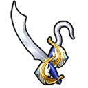
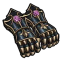

Samurai
Fighter
Wandering warriors capable of winning a battle with a single draw of the sword.
Stats
Attack (100)
0
Defense (100)
0
Health (100)
0
Hypermax: the strongest build
#28 of 42 classes in the Hypermax ranking
Leaderboard power
683,137
Profile power
546,510
Attack
22,258
Defense
126,740
Health
28,945
Critical
5%
Crit damage
×5
Element
185

Titan Admiral Arms T15
Rune: Maelstrom Element · Spirit: Titan Spirit
BIT.Runner Armor T15
Rune: Maelstrom Element · Spirit: Titan Spirit

Cursed King's Might T15
Rune: Oblivion Element · Spirit: Titan Spirit
Teddy Bear Head T15
Rune: Maelstrom Element · Spirit: Titan Spirit
Teddy Bear Feet T15
Rune: Maelstrom Element · Spirit: Titan Spirit
Kappa Cup T16
Rune: Maelstrom Element · Spirit: Titan Spirit
Skills: Iaido Grandmaster T4, Bulletproof T4, Beyond Immortal T4, Premium Brand T4, Titan Skin T4
Computed only from game data: Legendary quality, Starforged, Ascension and Transcendence, level 50.